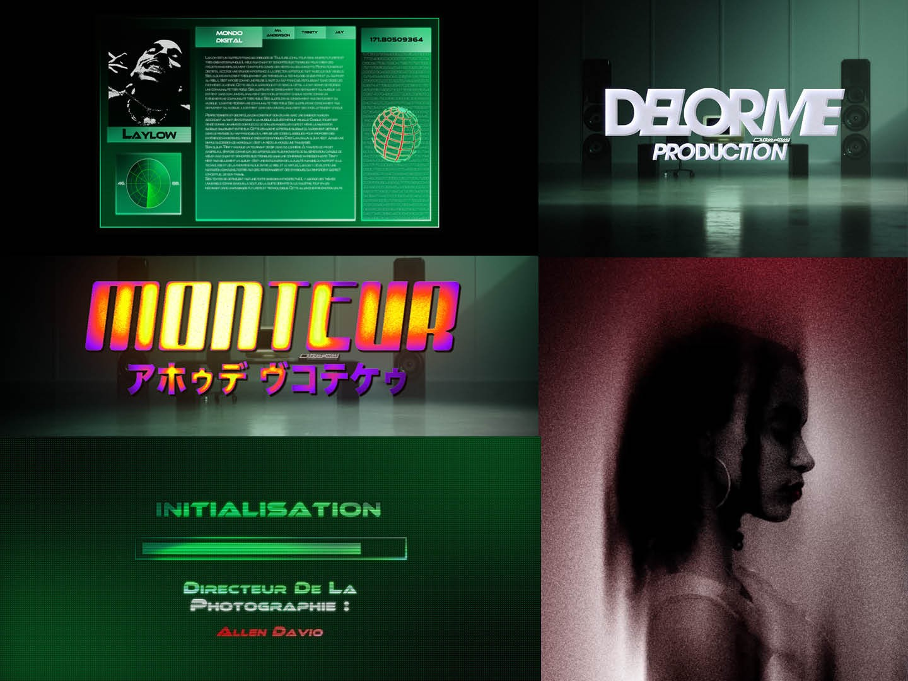

PROJET 02 / 07
Générique Laylow
Ce projet a été réalisé dans le cadre d’un cours d’After Effects. Il explore la création d’un générique fictif pour le rappeur Laylow. L’univers visuel explore l’esthétique Y2K et digitale des interfaces des années 2000.
La narration repose sur une montée progressive de la tension, traduite par un contraste complémentaire entre le vert et le rouge. Au fil de l’animation, le rouge prend progressivement le dessus, symbolisant l’intensification de la violence.
Le projet combine : motion design, 3D et prise de vue réelle.
Découvrir les autres projets →